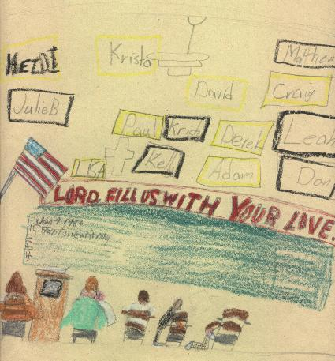

One day when the bell rang and everyone went into the third grade, Mrs. Duffey was not there. Everyone went to the office to see if Mr. Colle knew where she was. But Mr. Colle said he looked all over St Paul's church and school. So all of the third grade got into four groups and went looking for her. We looked in the garage and we went to all of the houses on the block to see if she was there. But she was not in any of the houses. Then everyone went in. Then everyone heard a big crash from downstairs. Jenny went to see what it was. She came back and told us what it was. Everyone went to the kitchen. Mrs. Duffey had been downstairs helping to clean up!